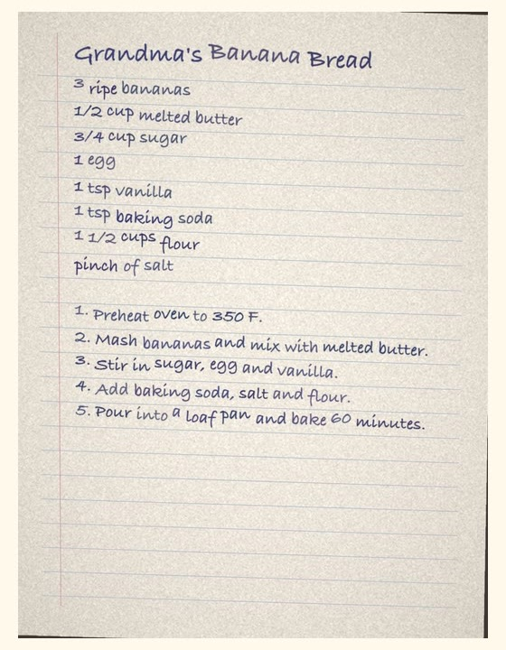
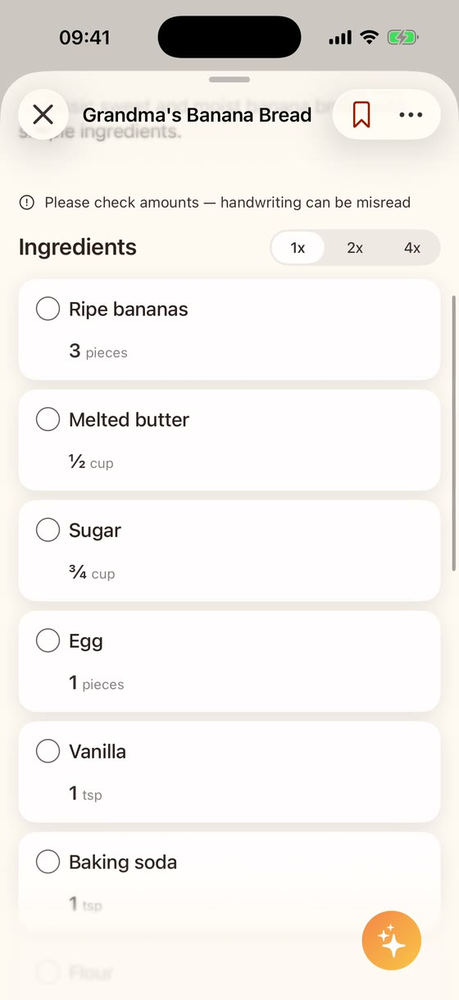
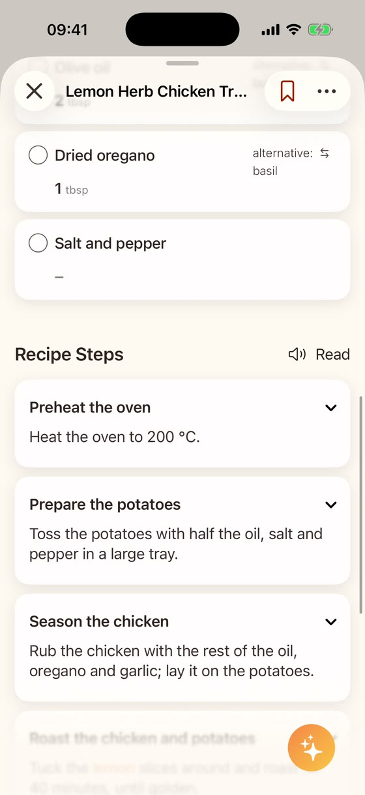

A family recipe book on your iPhone
Grandma's cards, family favourites, your own tweaks.
Grandma's card, the curry you have tweaked for years, the cake everyone asks for at birthdays: keep them in one recipe book on your iPhone. Edit each recipe the way you cook it, and pass it on as a PDF.



Screens 2 and 3 are real screens from the app. The card is a sample we made for testing: a digital image in a handwriting-style font, not a photo of real paper. Real handwriting is harder to read than this.
Recipes worth passing on
Some recipes only exist on one card or in one person's head. Ask for them, photograph the cards in ReciPics, and keep them in your book with the family's own tweaks.
Written the way you cook it
A family recipe book holds the dishes you actually make, written the way you make them: less sugar, a bigger tray, ten minutes longer in the oven. Change ingredients, amounts and steps until the recipe reads like yours. Recipes sit in meal categories such as breakfast, dinner and dessert, and you move one to another category from its menu.
Kept and passed on
Share a recipe with relatives as a PDF or as text, so the card is no longer the only copy. It can be read without the app. One recipe per PDF; there is no printed book.
ReciPics reads cards, pages and links with AI, and AI can make mistakes, so compare each recipe with its source before you cook, especially amounts and temperatures. Check ingredients yourself for allergies or intolerances.
Looking for one place for every recipe you save, not only the family ones? A digital cookbook on your iPhone · Recipe saver app
More: Digitize handwritten recipes · Scan recipes from cookbooks · Save recipes from websites
Each photo scan uses the app's AI allowance, which is limited without Premium. For new users without a paid plan, the number of link imports per month is limited. The app shows how many you have left.
To read a recipe, the photo and the text recognized on your iPhone, or the link, are sent to our servers and service providers, including OpenAI (USA); see the Privacy page.
Recipes from cookbooks, websites and social media are usually protected by copyright. Use ReciPics for your private recipe book only, and don't share or publish recipes you have no right to share. ReciPics is not affiliated with, endorsed by or sponsored by Instagram, Meta or TikTok.
Get ReciPics on the App StoreFor iPhone with iOS 26 or later.
Questions
Can I make a family recipe book with ReciPics?
Yes, on your iPhone. Photograph the family's handwritten cards, compare the amounts with each card, and share recipes with relatives as PDF or text.
Does ReciPics read handwritten family cards?
Yes, from a photo. ReciPics turns the card into a recipe you can edit. Handwriting is harder to read than print, so compare the amounts with the card, because AI can misread them.
Can I change a recipe after I've added it?
Yes. Edit the ingredients, amounts and steps, for example to write down that your oven needs ten minutes more.